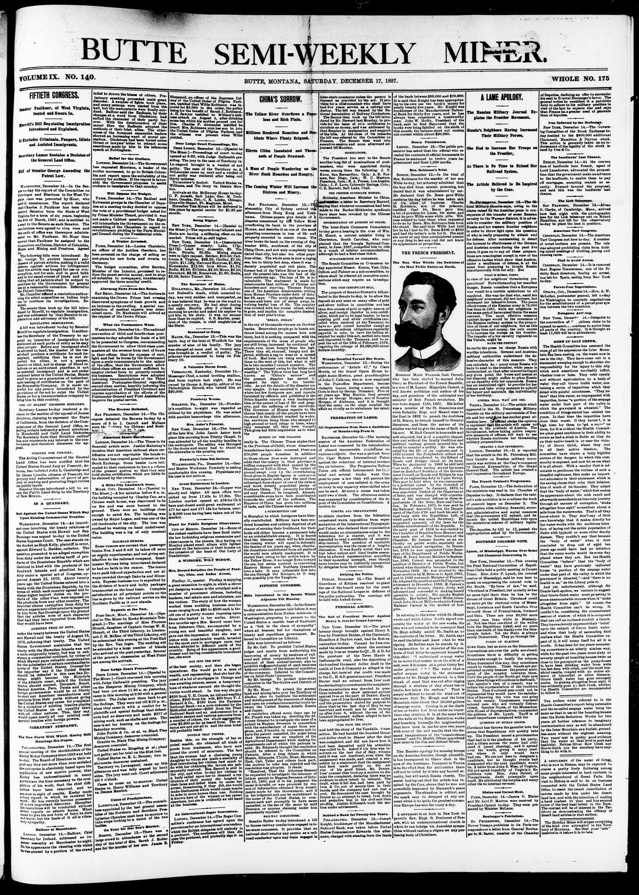

Suit Against the United States Which May Upset Existing Commercial Treaties.
https://www.loc.gov/resource/sn84036034/1887-12-17/ed-1/?sp=1

See the original pageVer la página original
WASHINGTON, December 14.—An important case involving the treaty relations of the United States with Hawaii and San Domingo was argued to-day in the United States Supreme Court. The case stands on the docket as Hugh Kelly, plaintiff in error, against Edward L. Hedden, collector. The question presented is an alleged exemption from duty under the existing tariff of products of the Dominican Republic which are identical in kind with the products of the Sandwich Islands and admitted free of duty under a special act of Congress, approved August 15, 1876. About twenty years ago the United States entered into a treaty with the Dominican Republic, by the terms of which each country agreed not to charge higher import duties on the products of the other than were imposed on like products from any other country. The importer claims exemption from duty for certain sugars and other products imported by him from San Domingo upon the ground that the articles were of such character that had they been imported from Hawaii they would have been
ADMITTED FREE OF DUTY,
under the treaty between the United States and Hawaii and the treaty of August 15, 1876, enforcing that treaty. The United States Government maintains that the treaty with the Hawaiian Islands was not a mere reciprocity treaty, but was in substance a commercial contract, by virtue of which Hawaii pays valuable consideration for the admission of certain merchandise to ports of the United States. Counsel for the importer say if the United States should be defeated in this case San Domingo might become the Honolulu of the Atlantic coast, while if the United States should succeed, Denmark, Brazil, Central America, Peru, Persia and other foreign governments would be at liberty to shut out American manufactures and products from their ports without giving the United States any cause for complaint for a violation of existing treaties placing the United States on an equality there with all other nations. This, they say, would upset nearly all our existing commercial treaties with foreign powers.
How to cite this articleCómo citar este artículo
Butte Semi-Weekly Miner. (1887). Butte, Mont., December 17, 188717 de diciembre de 1887. DR in the American PressRD en la Prensa Norteamericana. Library of Congress, Chronicling America: https://www.loc.gov/resource/sn84036034/1887-12-17/ed-1/?sp=1
ReferencesReferencias
Library of Congress, Chronicling America: Butte Semi-Weekly Miner, December 17, 188717 de diciembre de 1887.
Send an observationEnviar una observación
Does this article connect with your family, your town, or something you know? Did we get something wrong? Write to us. Observations go to the editor's inbox and are read by a person.¿Este artículo conecta con su familia, su pueblo o algo que usted conoce? ¿Nos equivocamos en algo? Escríbanos. Las observaciones llegan al buzón del editor y las lee una persona.
Send observationEnviar observación